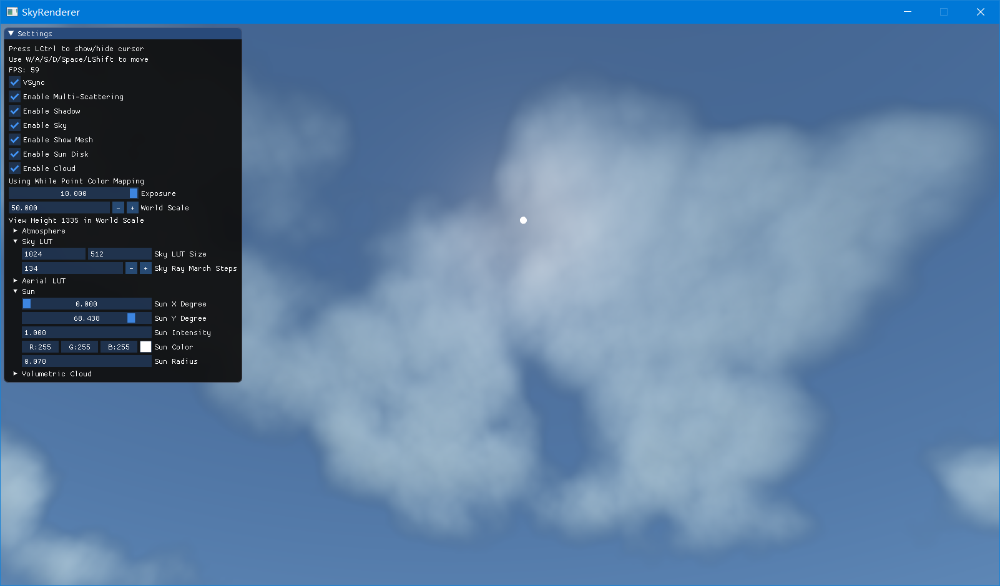
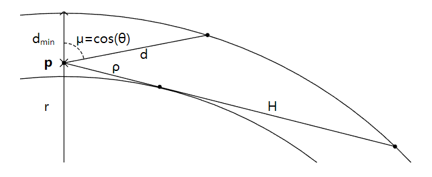
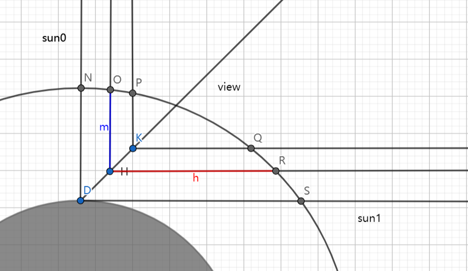

学习Games104课程的时候，老师讲到了大气渲染，虽然我不是摄影爱好者，但是夏天时每天吃晚饭回实验室都可以看到十分绮丽的晚霞，那种色彩确实十分魔幻，很吸引人，不得不感慨大自然呈现出来的色彩是那么美妙又自然。因此对于图形学中如何渲染大气产生了好奇和兴趣，刚好20年有一篇关于实时大气渲染的文章，难度适合我这种初学者，学习的同时顺便实现了一下。
仓库链接
按照惯例，首先贴一下实现的效果，不过先放一下实际拍真实的照片(拍的效果还不错…)
下面是自己实现的效果


好吧╮(╯-╰)╭ 其实云的效果有点尴尬，不过主要是验证体积云渲染与大气散射模型的一致性，对于噪声的使用还不是很熟悉，而且参考的云模型论文虽然公式给的很全，但是资源却没有提供，因此有些参数都全局统一了一下，看上去细节没有那么丰富。不过主要的目的还是学习Volumetric Render，虽然我实验室做的是体渲染，俗称Volume Render，别看都可以简称体渲染，但是两者差别还是很大的，前者一般更多翻译为体积渲染，主要是实时渲染领域用于渲染大气、云和雾等效果，包括体积光的效果。而后者一般用于科学可视化、医疗图像可视化，前者是基于物理的渲染，主要目的就是逼真，而后者主要是特征可视化的目的，光照模型也是有物理依据的，但是是在特定条件下的，比如体绘制一般只考虑粒子的能量发射和吸收，不考虑散射等，实际渲染时并不存在一个具体的光源或者环境光，它假设物体本身就发光，不同特征发射不同颜色的光，而且这过程也有能量吸收，因此最后的绘制结果也许是有真实感的，但是并不符合物理原则。不过对于科学和医疗领域，并不在乎有多真实，更关注的是感兴趣部分特征的可视化以及更好地发现和观察这些特征，另外还有就是性能问题，体绘制是相当消耗性能的，虽然大部分时间都花在等待纹理获取的时间上（也有很多针对这个的加速，比如计算好有效的数据区域，跳过空白块之类），以及如何处理大规模的数据，特别是医疗图像，比如小鼠的全脑数据，达到了tb级别，也许以后会另开一篇文章讲讲这个工作。
当初看到大气渲染的时候，其实就有一种熟悉的感觉，这个ray marching和ray casting不是一样的概念嘛？可能细节不同，但是算法流程都是一样的，从某点向某个方向发射光线，随后光线一步步地前进，光线每一步都进行相关的着色计算，提前终止光线或达到最远的位置。顺便一题，体积云的渲染也是如此，而且它的散射模型可和大气的一直，不过参数不同。两者虽然和体绘制不同，但是基本的思路是类似的，我也尝试了用ray casting绘制了一下云，就感觉云厚实了很多…果然体绘制有其专门的领域。
废话不说了，接下来主要介绍本文采用的大气渲染方法：“A Scalable and Production Ready Sky and Atmosphere Rendering Technique”
这篇文章的工作其实建立在08年的一篇论文：Precomputed Atmospheric Scattering ，这一篇文章的作者在17年的时候重写实现，代码上配备了十分详细的注释，即便不看论文看完代码也大致就能懂了，当然代码量比较大，概念比较多，一开始看可能比较难，如果有体介质模型的相关知识，也许比较容易懂。
体介质渲染模型
当光穿过体介质的时候，主要考虑三个因素：
吸收Absorption
一般记为 σa，用于表示光通过单位距离后被吸收的比例，或者说光通过单位距离被吸收的概率密度，两者是等价的。假设一束光从p点出发，沿着ω的方向前进，那么经过距离d后，光因为被粒子吸收，剩余的能量为：
e−∫0dσa(p+tω,ω)dt
发射
这个一般不考虑，但是在体绘制中会用到。
散射 —— OutScattering
记为 σs。光与粒子碰撞时，会发生散射现象，物理上的散射比较复杂，不同波长的光会表现不同，而在图形学中，一般只考虑rgb三个波段的散射效应。散射与之后相位函数改变不同，相位函数表示的是光发生散射事件后朝着某个方向的能量比，而σs则是光前进单位距离发生散射的概率密度，也就是说，有了散射事件的发生，才会引出后面相位函数的概念。
这一节考虑的是向外散射，也就是说光在前进过程中，发生散射后，向各个不同方向散开。而向内散射指的是，光在前进过程中，其它方向的光线因为散射改变方向，汇聚到当前方向的光线中。显然前者是能量损失，而后者是能量增加。σs代表是散射事件的发生，并不考虑具体的散射事件类型。那么光线在前进过程中，损失的能量因素主要是被吸收和被散射，用一个衰减系数σt表示光线每前进单位距离后损失的能量比例。
σt(p,ω)=σa(p,ω)+σs(p,ω)
由此可以引出反射率albedo的定义：
ρ=σtσs
也就是说，反射率代表的是，光与粒子发生碰撞事件时，发生散射的概率，即不是被吸收。
给定σt，考虑一束光从p0到p1经过距离d只考虑衰减而剩余的能量比例为（不是净剩余，没有考虑InScattering增加的能量）：
Tr(p0→p1)=e−∫0dσt(p0+tω,ω)dtTr(p0→p1)=Tr(p1→p0)Tr(p0→p2)=Tr(p0→p1)Tr(p1→p2)
散射 —— InScattering
一束光从点p向ω方向发射，考虑来自各个方向的散射光增加后的能量为：
Ls(p,ω)=Le(p,ω)+σs(p,ω)∫S2phase(p,ωi,ω)Li(p,ωi)dωi
当然大部分情况下Le(p,ω)都为零。
相位函数 Phase Function
相位函数代表的是，散射事件发生后光线向各个方向散射的能量占原来能量的比例，它也是一个概率密度函数，即对各个方向积分后结果应该为一。最简单的相位函数即能量在各个方向上均匀分布，即：
p(ωo,ωi)=4π1
比较常用的一种相位函数模型为Henyey-Greenstein相位函数，通过控制方程中的参数g，可以调整光前向散射(g -> 1)还是后向散射(g -> -1)：
pHG(cosθ)=4π1(1+g2+2g(cosθ))3/21−g2
大气散射模型
有了以上知识后，就可以开始分析大气的散射模型了。大气模型主要考虑三种微粒，一是大小与光波长接近的小分子粒子，会形成rayleigh散射；二是大分子微粒，比如灰尘和小水滴，会形成mie散射；三是臭氧分子，会形成吸收。另外大气层不同高度的浓度是不一样的，显然易见，地面的大气浓度会更大，而越高大气越稀薄。不过两者之前可以通过一定的关系转换：
σt(h,λ)=σt(0,λ)exp−Hh
其中H是一个常数，在地表测得σt和σa后，对于高度h位置，我们可以通过上式求得。
Rayleigh散射
rayleigh散射只考虑散射事件而不考虑吸收事件：
σt(h,λ)=σs(h,λ)σs(h,λ)=σs(0,λ)expHrayleigh−hphase(μ)=16π3(1+μ2)
本文中使用
σs(0,rgb)=(5.802,13.558,33.1)∗10−6m−1Hrayleigh=8
Mie散射
σt(h,λ)=σs(h,λ)+σa(h,λ)σs(h,λ)=σs(0,λ)exp−Hmiehσa(h,λ)=σa(0,λ)exp−Hmiehphase(μ)=8π3(2+g2)(1+g2−2gμ)3/2(1−g2)(1+μ2)
本文中使用
σs(h,λ)=3.996e−6m−1σa(h,λ)=4.4e−6m−1Hmie=1.2
Ozone吸收
σa(h,λ)=σa(0,λ)max(0,1−15km∣h−25km∣)σa(0,λ)=(0.65,1.881,0.085)e−6m−1
小结
实际渲染时，λ一般只取特定的rgb。
σt(h)=σrayleighS(h)+σmieT(h)+σozoneA(h)σs(h)=σrayleighS(h)+σmieS(h)phase(μ)=σs(rayleigh)+σs(mie)σs(rayleigh)∗phase(rayleigh)+σs(rayleigh)+σs(mie)σs(mie)∗phase(mie)
单次散射渲染方程
首先不考虑地面反射，我们假设光线从p点沿着方向ω发出，与场景相交于点q。
L1(p,ω)=Tr(p,q)Le(q,ω)+∫t=0∣∣p−q∣∣Linscattering(p,p−tω,ω)dt(1)
Linscattering(p,x,ω)=LsunVis(x+ttop−atmos,x)Tr(x+ttop−atmos,x)σs(x)Phase(x,μ)Tr(p,x)(2)
对于单次散射项，只考虑视线方向上的每一点直接从太阳散射的部分。如果形象点具体点，也就是太阳光到达大气层顶部，经过距离x发生单次散射，然后射入我们的眼睛。在太阳光从大气层顶部到发生散射的这段距离，需要考虑衰减以及可视性，在散射处，需要考虑 σs 和相位函数，散射后从x到眼睛的这段距离，还需要考虑衰减。这只是我们沿着视线方向的某一个点，对于视线上的所有点都有这样的计算，因此最终就是这条路径上的积分。此外，我们还需要考虑相交点q的发光情况，可能q是个光源，或者q反射光源等，从q到p这段路程，我们则只需要考虑衰减即可。
多次散射渲染方程
其实单次散射可以看作是多次散射的特殊情况，在之前我们对于视线路径上的一个点x，只考虑x处沿着太阳光方向的散射，而多次散射则是在x处考虑来自每个方向的散射。对于二次散射来说，应该是考虑x处来自各个方向的单次散射，即太阳光在到达x处已经且只发生过一次的散射，也就是说二次散射可以通过对一次散射的积分求得，实际上08年的那篇文章就是先预计算了一次散射，二次散射通过查表一次散射并积分求得，依次向上可以求得任意次数的散射。20年的文章不再考虑预计算每一阶的散射，而是直接一次性求出所有二阶及以上的散射，存到一张二维的LUT中，08年的LUT还是四维的（通过压缩存在三维纹理中）。二次散射的方程为：
L2(p)=∫S2L1′(p,−ω)pudω(3)
pu=4π1(4)
L1′(p,ω)=Tr(p,q)Le(q,ω)+∫t=0∣∣p−q∣∣E⋅Vis(x+ttop−atmos,x)Tr(x+ttop−atmos,x)σs(x)pu⋅Tr(p,x)dt
方程3代表空间中一点来自各个方向二次散射的能量。
上述方程中有一些特别注意的地方。首先是一些假设，对于二阶及以上的散射，假设是各向同性的，也就是说所有的相位函数都为常数4π1，其次一次反射项里太阳的辐射度替换成E，实际上为1，因为它是个常数，这处当作一个占位符，之后可以用实际的太阳辐射度替换。在方程（3）还有一个pu项，因此L2p代表的就是发生二次散射的，L1′代表的一次散射能量，因此还要再发生一次散射，需要乘以pu，但是不用乘以σs，因此此时考虑的是发生二次散射的，也就是这次散射必须要发生。在二阶及以上的散射，我们不再考虑与场景相交点的一项。
因此空间中经过二次散射到达某一点的能量为：
L2(p)=∫S2(∫t=0∣∣p−q∣∣Tr(p,x)L1(x,−ω)⋅σs⋅pudt)dω
注意这里的σs和pu是针对积分路径上的某一点必须的，即这一点发生散射事件的概率和能量占比。另外L1比较特殊，是方向上的delta分布。
按照这个定义，可以马上得到更高阶的散射方程：
L3(p)=∫S2(∫t=0∣∣p−q∣∣Tr(p,x)⋅σs⋅pu⋅L2(p+tω)dt)dωL4(p)=∫S2(∫t=0∣∣p−q∣∣Tr(p,x)⋅σs⋅pu⋅L3(p+tω)dt)dωL5(p)=∫S2(∫t=0∣∣p−q∣∣Tr(p,x)⋅σs⋅pu⋅L4(p+tω)dt)dω
然后做个大胆的假设，二阶及以上空间中相邻点的in-scattering散射到的能量是一样的，也就是说有
Ln=Ln(p+tω), n>=2
然后之前高阶的计算公式就成了：
L3(p)=L2(p)∫S2(∫t=0∣∣p−q∣∣Tr(p,x)⋅σs⋅pudt)dωL4(p)=L3(p)∫S2(∫t=0∣∣p−q∣∣Tr(p,x)⋅σs⋅pudt)dωL5(p)=L4(p)∫S2(∫t=0∣∣p−q∣∣Tr(p,x)⋅σs⋅pudt)dω
这不就是等比数列嘛…这个假设确实厉害，不过感觉没那么数学物理上的准确，因为相邻的点可能相距特别远。
然后记等比数列的比例为fms：
fms=∫Ω4π(∫t=0∣∣p−q∣∣Tr(p,x)⋅σs⋅pudt)dω
因此我们有：
i=2∑nLi(p)=L2(1+fms+fms2+... +fmsn)=1−fmsL2=Ψms
因此最终的渲染方程为：
L(p,ω)=Tr(p,q)Le(q,ω)+∫t=0∣∣p−q∣∣Lsun⋅σs(x)⋅( Vis(x + ttop−atmos, x)⋅Tr⋅(x + ttop−atmos, x)⋅Phase(x, μ)+Ψ⋅pu)⋅Tr(p,x)dt
这里和原论文给出的公式有点不同，论文中积分路径上一点p的Ψms不需要再考虑其到视点的衰减。
地面网格渲染
对于地面网格的渲染，分为三个部分，首先是入射光部分，这部分光线传输只考虑衰减和可实现，然后是表面反射的BRDF部分，最后是反射光进入眼睛过程中的衰减和大气in-scattering，为了更高效地添加这部分的大气散射，使用了类似cluster rendering的方法，分割camera的frustum，计算每一个cluster中心到眼睛的transmittance和累积in-scattering，存储在一个三维纹理中，其中transmittance三个波段转换为单波段，刚好可以使用rgba纹理四波段存储。在渲染时根据片段的screen coord和深度值采样三维纹理，得到从反射点到视点的衰减和累计in-scattering即可计算。
体积云渲染
体积云的渲染部分其实和大气散射部分其实是类似的，不同的是σs和σt的取值，一般体积云并不直接提供这两项参数，只有一个单一的density表示当前位置云的密度，需要将其转换到σs和σt，最简单的做法就是不转换，也可以通过赋予不同波段不同的σs和σt，得到有颜色的云。至于云的相位函数，可以使用最简单的均匀分布，也可以采用类似于mie散射的相位函数，或者是两者的blend。另外云的一般只需要考虑单次散射就够了…主要是多次真的很消耗性能，每一次density的采样，需要采样两个噪声纹理和一个天气纹理，而且还有很多的remap计算，虽然实验室使用的3090ti似乎还是有60帧，但是在自己的小笔记本电脑上就不太顶得住了。
体积云的主要难点还是如何采样得到一个位置上的云的density，这个需要一个shape noise和一个detail noise，两个都是可平铺（tilable）的三维纹理，可平铺就是把噪声拼接在一起，看不出拼接的边界，彷佛是同一块噪声。另外还需要参数tile来控制噪声重复的频率，这个又是一个坑，目前还没搞清除，这个值应该和实际场景有关，因为我在用的使用，是直接用world pos去乘以一个系数tile采样的，不需要做拉伸归一化，当然需要设置repeat的采样模式。另外就是真正控制云出现的weather map，其实还可以控制云的高度，但是我参考的论文没有给出任何资源…不过关系不大，我主要是用来检验一下能否和大气散射模型保持一致性，噪声这一块还是水很深的，参考shadertoy。
实现部分
Transmittance
透射率可以通过预计算存在于一张二维纹理中。我们假设透射率在水平方向上是各向同性的，并且地球上同一高度的球面上所有点的透射率都是一样的，那么对于任意一点p，沿着方向ω的透射率只和两个变量有关，高度h和方向与竖直方向的夹角，可以把后者的cos值作为参数。

对于高度为h的某个点，其到地心的距离为r，到大气层顶部的距离为dmin，在这个点沿着任意方向与大气层顶部求交，假设距离为d，那么理论上距离最远为(ρ+H)，ρ和H可以通过简单的勾股定理求出，d可以通过简单的余弦定理求出，那么对于给定的r和μ=cosθ，其映射为
x_mu=（d−d_min)/(d_max−d_min)xr=rho/H
Multi-Scattering
通过上面的分析，多重散射可以预计算到一张二维纹理中，设计到的因素有两个，一个是高度h，另一个是太阳的角度θ。
在预计算的时候也把pu考虑进去，那么在实际使用的时候就直接采样lut的值即可。
天空纹理
因为天空的颜色分布比较低频，而且天空的渲染我们需要使用ray marching实时计算单次散射项，因此一般先渲染后一个低分辨率的纹理中，之后再上采样到屏幕分辨率。并且由于天空在靠近地平线的部分颜色变换比较距离，因此对于竖直方向的map并不是线性的，参考论文中：
v=0.5+0.5∗sign(l)∗π/2∣l∣, with l∈[−π/2,π/2]
大气透视
大气透视解决的主要是大气散射参与到地表反射当中的问题。在前面提到，物体接受到的大气辐射度只考虑衰减项，但是在反射后进入眼睛的过程中，需要考虑大气散射的衰减和in-scattering，因此我们需要预计算大气透视lut，而且是每一帧更新的，因此一般分辨率设置需要合适，当然更高分辨率效果更好。在实现过程中，需要从眼睛到物体表面进行ray marching，计算每一点到眼睛的累积大气散射，对于多重散射不考虑其遮蔽情况，累加上去即可，而对于单次散射还需要考虑其遮蔽情况，即太阳与该点的可视情况，这可以从shadow map中读取深度信息，进行遮蔽项判断。
另外我们的world规模是建立在mesh位置和model变换上的，比如mesh原来的位置pos的值范围可能是[-1,1]，我们可能通过model矩阵对其进行了放大，这时候世界的规模就变大了。我们的大气散射模型，是建立在标准单位meter尺度上的，在离散积分的时候或者叫ray marching的过程中，我们最后都要乘以一项步长（dt），这一项也是以meter为单位的，因此理论上我们需要通过model矩阵将我们的mesh放大到合适的尺度，但是一般来说我们并不会把mesh放大到真实世界的规模，而是相对于屏幕显示合适的比例，可能这个model矩阵的放大比例为10，mesh的pos范围变为[-10,10]，这就造成我们的世界规模偏小，而大气散射是建立在真实的物理世界规模上的，这样子的一个问题就是，大气透视的效果几乎微乎其微，因为dt十分小，相当于我们在真实世界的大气中，有一个迷你版的我的世界，大小为十平方米内，这个距离大气透视的效果就不存在，除非强烈的雾霾天气…因此我们可以在设置一个world scale变量，在mesh shader里读取到片段的位置计算出与视点的距离后，再乘以一个world scale后再从aerial lut中读取大气散射的值，因此有一个隐藏的限制就是，相机的远平面far z乘以world scale应该小于大气透视的距离，比如我设置的far z为100，world scale为20，那么大气透视的距离至少为2000m才可以保证相机看到的片段都处于大气透视lut的范围内。
总结
大气效果
- 太阳附近高亮的光晕其实主要是mie散射造成的，更准确地来说，是mie散射中的g造成的。当g从0到1增加的过程中，光晕会越来越亮，但是其范围会越来越小，当g变为1时，就变成了delta分布，光晕消失只剩下太阳圆盘。当g较小时，光晕比较微弱，因此调节合适的g，可以使得光晕保持一定大小又很亮。
- 臭氧层也是天空呈现蓝色的重要因素，其对r波段的吸收更加厉害，如果将臭氧层的高度调节得更厚，在黄昏时可以观察到比较魔幻的粉色。
- 傍晚和清晨天空的颜色之所以不同，是因为傍晚时大气中微尘比较多，mie散射更剧烈，可能臭氧也会发生改变，因为现实中的晚霞有点带粉色。
- 天空呈现蓝色主要原因是其实是rayleigh散射，白天的时候，光程比较短，蓝色光更多被散射，总的来说其被散射的能量比被吸收的能量能少，因此看到的天空颜色主要为蓝色，而到了黄昏时，光程比较长，蓝色光被散射消耗的能量比被吸收的更多，因此红色占据主导。这里面的关键其实并不是光程长短的，因为调节大气层顶部高度，也无法实现白天时天空呈现红色的情况，具体可以看最后的扩展。
性能分析
暂时先不测了，一方面使用实验室的3090ti有点缺乏普适性，另外我对性能分析这方面还比较陌生，虽然可以用Nsight Graphics分析每一帧所有事件的耗时，不过测试了几帧，感觉波动还挺大，不过总的时间（不包括渲染云）都在1ms以内。
没想到最耗时的竟然是shadow map，可能它超大的分辨率(4096x4096)以及包括了所有的三角形。
比较关键的其实是天空纹理（sky view）和大气透射表（aerial lut）的生成，这两个得益于大气低频的特征，可以以较低的分辨率计算存储。另外一点是关于体积云的渲染，这个波动是真的较大，因为实现上是以一个包围盒代表云出现的区域，而且云的密度越大，可以提前终止光线前进，因此不同视角下性能应该变化较大。
拓展

如上图所示，假设视点在D，白天时太阳光的方向为sun0，黄昏时为sun1，视线方向为view，只考虑单次散射的情况下，光从大气层顶部与视线相交再经过一次散射后进入人眼，我们可以观察到，无论是白天还是黄昏，太阳光经过一次散射后进入人眼的光程是一样的，但是其从大气层顶部到散射点的距离是不同的，黄昏时这一段光程更长，根据衰减项，蓝色衰减的相对更多，但是到了散射点，蓝色也会更多地被散射，因此这是一种相对关系，类似于求出极值，可以求出在某一个方向时，光被衰减的比较和被散射的比较刚好相平衡，所以和大气层的厚度是没有关系的，但是和大气层是球形是有关系的。